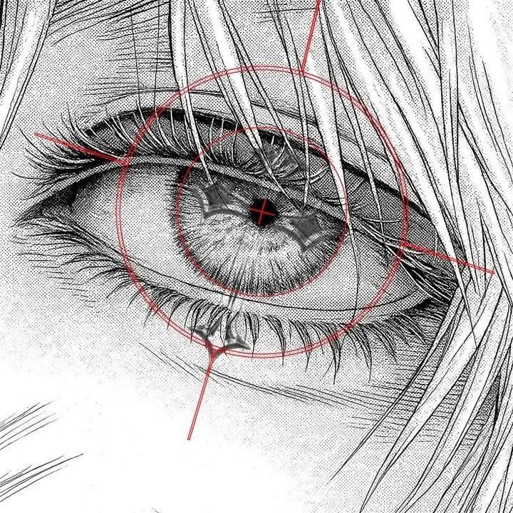

Mikä on attribuutti?
Attribuutti on elementin ominaisuus, joka määrittelee elementin toimintaa tai ulkoasua.
Mihin alt-attribuutti käytetään?
alt-attribuutti käytetään kuvan vaihtoehtoisen tekstin määrittämiseen, joka näytetään, jos kuvaa ei voida ladata.
Mitä href-tarkoittaa?
href-attribuutti määrittelee linkin kohteen URL-osoitteen.
Miksi kuvalle kannattaa nataa alt-teksti?
alt-teksti auttaa näyttämään kuvan sisällön, jos kuva ei lataudu.